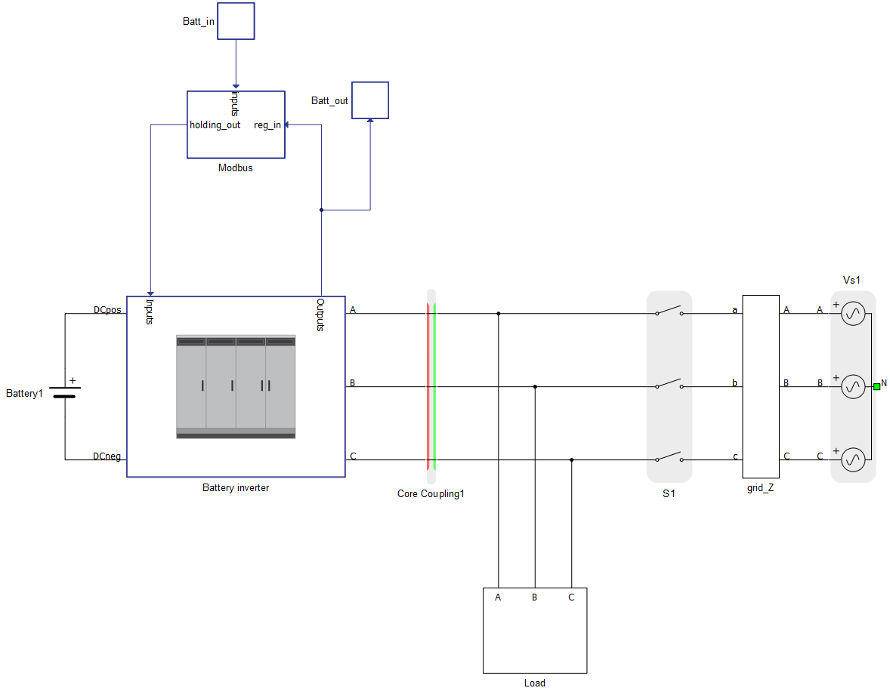
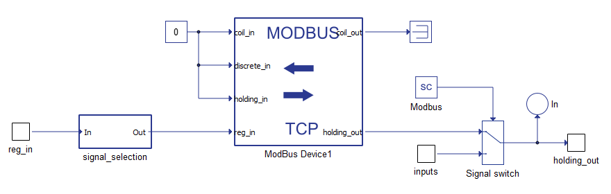
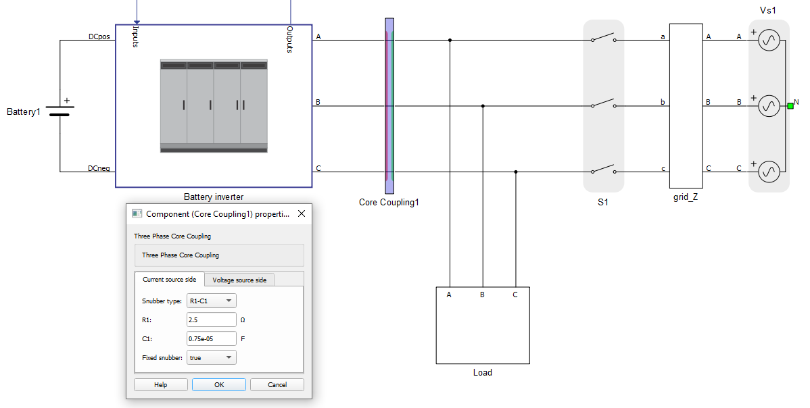
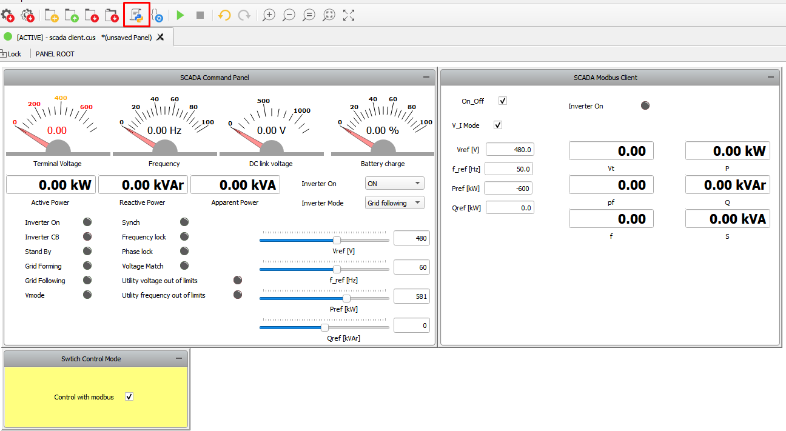
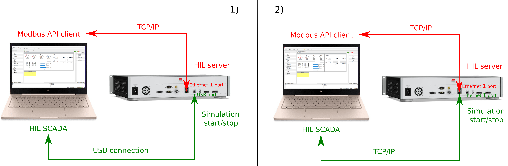

Modbus Device with HIL SCADA-based client
Demonstration of remote control of a battery inverter by Modbus client
Introduction
Modbus is a serial communications protocol published by Modicon for use with its programmable logic controllers (PLCs). It has become one of the most widely used communication protocols in industry, and is now the most commonly available way of connecting industrial electronic devices. The protocol defines function codes and the encoding scheme for transferring data as either single points (1-bit) or as 16-bit data registers. This basic data packet is then encapsulated according to the protocol specifications for Modbus ASCII, RTU, or TCP. The Typhoon HIL toolchain supports Modbus TCP protocol.
Modbus protocols are supported by all Typhoon HIL devices. To use this protocol on a HIL 402 device, you will need to connect the only Ethernet connector located on the back plate of the device. On other devices you can use the bottom Ethernet port (labeled 1), which is typically used for non-time-critical protocols. Modbus protocols are defined as master/slave protocols, which means that only the node assigned as the Master may initiate a command. All other devices are slaves, and they must wait for requests or commands. This is better known as client and server in the context of Ethernet-based networking, so in the Typhoon HIL toolchain those terms are used. In this context, the slave becomes the server and the master becomes the client.
In the Typhoon HIL toolchain, both client and server are implemented. The HIL device can act both as a Modbus server and a Modbus Client, while the client side can alternatively be set up in HIL SCADA running on the PC. The server is implemented with the Modbus Device component which can be accessed through external Modbus Clients. Also, there is a possibility to connect with a standardized SunSpec Modbus protocol via a dedicated SunSpec Modbus Device component.
For simulating a Modbus client, you can use the dedicated Modbus API. This is a Python-based API, which can run on your PC (even without a HIL device). It can be used inside of HIL SCADA, Standalone HIL SCADA, or even in standalone scripts.
Model description
The model consists of two main parts: an electrical part and a communication part. The electrical part models a standard grid-connected Battery inverter from our Microgrid Toolbox, with the ability to toggle between grid forming and grid following mode. In forming mode, the battery inverter sources power to a Constant Impedance Load.

The communication part is located inside the Modbus subsystem, and is directly connected to the Battery inverter. It is handled by a Modbus Device component. There is a possibility to toggle between SCADA and Modbus control mode. By changing the value of the Modbus SCADA Input, you can control which control inputs will pass through the Signal switch to the Inverter.

The Modbus Device is configured using a Python dictionary (config_Batt). The dictionary is defined inside the Model Initialization script.
#Modbus server configuration
config_Batt = {
'port': 502,
'ip_addr': '192.168.0.219',
'netmask': '255.255.255.0',
'slave_id': 2,
'coil_input_addresses': '',
'coil_output_addresses': '',
'discrete_input_addresses': '',
'holding_register_input_addresses': '',
'holding_register_output_addresses': '2000, 2001, [2002,2003]f , [2004,2005]f, [2006,2007]f, [2008,2009]f',
'holding_register_output_init': [0, 1, 60.0, 480.0, 0.0, 0.0],
'input_register_adresses': '0, [1,2]f, [3,4]f, [5,6]f, [7,8]f, [9,10]f, [11,12]f'
}
The first keys of the dictionary define the network-oriented parameters: port, IP address, netmask, and slave ID. Before compiling the model make sure that the Modbus device belongs to the same subnetwork as your PC. You can check the current IP address of the PC, and change the value of the 'ip_addr' field accordingly. Alternatively, you can define PC IP address as static (choose an IP address from the same IP range as in the Modbus device).
The remaining keys of the configuration dictionary are used to define the Modbus registers. Since there aren’t any coils or discrete inputs in this particular model, those fields are left empty. For holding registers, the dictionary defines 6 output registers (2 integers and 4 floats). The next key allows for defining initial values for the holding registers, which will be overridden as soon as a Modbus client sends a write command to the server. The last key provides definitions for 7 input registers (1 integer and 6 floats). Those registers are interfaces for sending measurements from the simulation to the Modbus Client, and for receiving commands from the Modbus Client to the simulation.
Table 1 provides the whole Modbus specification with all input and output registers.
| Input registers - readings from the model | |||||||||||
| Parameter | Register(s) | Type | |||||||||
| Inverter On | 0 | unsigned int | |||||||||
| Terminal voltage measurement | 1,2 | float | |||||||||
| Active power measurement | 3,4 | float | |||||||||
| Reactive power measurement | 5,6 | float | |||||||||
| Apparent power measurement | 7,8 | float | |||||||||
| Power factor measurement | 9,10 | float | |||||||||
| Frequency measurement | 11,12 | float | |||||||||
| Output registers - commands to the model | |||||||||||
| Parameter | Register(s) | Type | Default Value | ||||||||
| Inverter On | 2000 | unsigned int | 0 | ||||||||
| Operation mode | 2001 | unsigned int | 1 | ||||||||
| Frequency setpoint | 2002,2003 | float | 60.0 | ||||||||
| Voltage setpoint | 2004,2005 | float | 480.0 | ||||||||
| Active power setpoint | 2006,2007 | float | 0.0 | ||||||||
| Reactive power setpoint | 2008,2009 | float | 0.0 | ||||||||
This model runs on 2 cores, and therefore includes core coupling elements, as shown in Figure 3.
The R-C snubber must be used on the red (current source) side since the coupling faces contactors on both sides (you can go inside the battery inverter subsystem to see that the contactor is facing the red side of the coupling). More information about the use of snubbers and their parametrization can be found here.

Simulation
This model comes with a pre-built SCADA panel. It offers the most essential user interface elements (widgets) to monitor and interact with the simulation at runtime, allowing you to further customize it according to your needs.
The Panel file consist of 3 widget groups: SCADA Command Panel, SCADA Modbus Client, and Switch Control Mode.

In the Panel initialization dialog (marked with a red rectangle in Figure 4) you can find Python code defining how the Modbus Client initialization is done. This is shown in the code below. After importing the basic Python API packages, the basic network Server parameters are defined. Then, the Modbus Client object (battery_client) is initialized using these network parameters. The remaining code code defines the input and output registers. The input registers are specified via the battery_input_register_address String, and the output registers are defined by the battery_output_register_address dictionary.
# Modbus client configuration import typhoon.api.modbus as modbus from typhoon.api.modbus.exceptions import ModbusError, ModbusNotConnected, ModbusInvalidRegSpec import typhoon.api.modbus.util as mb_util BATTERY_SERVER_ADDRESS = '192.168.0.219' PORT = 502 # Battery battery_client = modbus.TCPModbusClient(host=BATTERY_SERVER_ADDRESS, port=PORT, auto_open=True) #input of server battery_input_register_address = '0, [1,2]f, [3,4]f, [5,6]f, [7,8]f, [9,10]f, [11,12]f' #output of server battery_output_register_address = ["2000", "2001", "[2002,2003]f" ,"[2004,2005]f", "[2006,2007]f", "[2008,2009]f"]
Widgets in the SCADA Command Panel group access the HIL simulation directly using HIL API (through USB or Ethernet connection). From this group, you can control the Battery inverter the same way as in any other microgrid example (assuming that Modbus checkbox is unchecked).
The widgets inside the SCADA Modbus Client group are used for Modbus communication. By default the “Control with Modbus” checkbox is unchecked, which means that the Battery inverter is controlled directly by the SCADA Command Panel. By checking the box, you switch the Inverter control mode to Modbus. In the SCADA Modbus Client group, there are 6 widgets for sending commands to the Modbus server. Those commands use the write_registers_adv() function from the Modbus API. The remaining 7 widgets display readings from the Modbus server. Those widgets utilize another function - read_input_registers_adv().
There are two ways to connect to a HIL device - via USB connection and Ethernet connection (Figure 5). The first approach (1) utilizes USB for direct communication between the PC (SCADA) and the simulation on the HIL. Commands are sent through this connection for starting and stopping the simulation. Also, this communication is used by the controls inside the SCADA Command Panel. Modbus TCP communication in this setup passes through the Ethernet 1 port, which is used by the widgets inside the SCADA Modbus client group. The second approach (2) uses an Ethernet connection for both communications. This guide provides more information about direct Ethernet communication with the HIL device.

Test Automation
We don’t have a test automation for this example yet. Let us know if you wish to contribute and we will gladly have you signed on the application note!
Example requirements
Table 2 provides detailed information about the file locations and hardware requirements for running the model in real-time, followed by the HIL device resource utilization when running the model using this minimal hardware configuration. This information is provided to help you with running and customizing the model as you see fit.
| Files | |
|---|---|
| Typhoon HIL files | examples\models\communication protocols\modbus\client and server\ battery server.tse scada client.cus |
| Minimum hardware requirements | |
| No. of HIL devices | 1 |
| HIL device model | HIL402 |
| Device configuration | 1 |
| HIL device resource utilization | |
| No. of processing cores | 2 |
| Max. matrix memory utilization | 78% |
| Max. time slot utilization | 74% |
| Simulation step, electrical | 1 µs |
| Execution rate, signal processing | 200 µs |
Authors
[1] Dusan Kostic